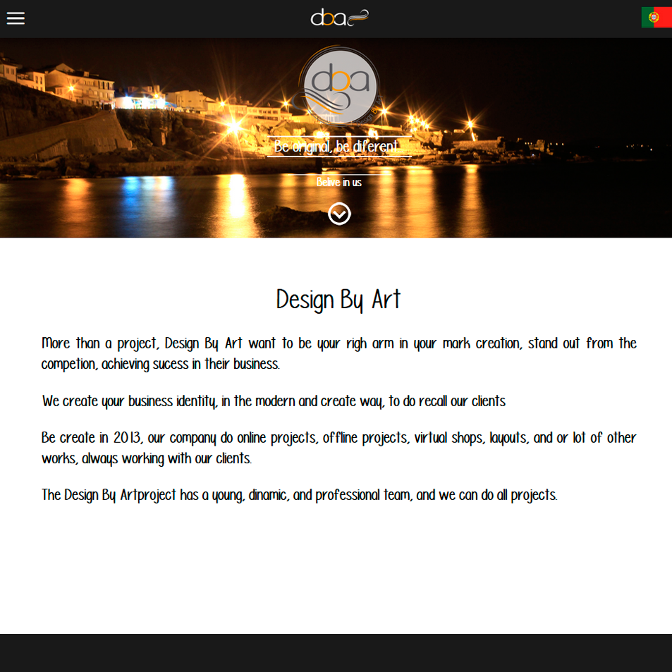

Sérgio António
29 years old
818 310 8524
Burbank, CA
sergio.mantonio@gmail.com
Escola Profissional da Região Alentejo
www.epral.pt
>> 2001-2004
>> Estremoz - Evora - Portugal
<> Professional Technical course level III of IT and management .
<> It was taught various programs that highlight the most important.
<>Since then I have been always related to this universe.
FRENETIKPOLIS
www.frenetikpolis.pt
>> 2014
>> Lisbon - Portugal
<> I did training in 2014 to improve knowledge in the 3D area.
YOUTUBE
www.youtube.com
<> Due to lack of opportunities to attend courses, I studied and learn more in the area through video lessons available on this site.
<> It was a very important tool in my development.

Design By Art
2013-2015
Responsible for the creation, development and maintenance of web sites, as well as its structure and plan.
It was a very rewarding and profitable experience with all the knowledge acquired, achievements and successes.
I was able through creativity and the digital platform open new horizons to my customers resulting in their own success.

Biago Media
2014-2015
For about one year I’ve worked remotely with this company, having as main role, design functions.
Developed logos, banners, rotators, edited and processed and images.
Contributing decisively for the success of so many esteemed clients.
Police Forces
2010-2015
Durante este tempo que trabalhei como policia adquiri um serie de caracteristicas que fortaleceram a minha forma de estar na vida.
O grande trabalho de equipa que é necessário para desenvolver aquelas funções.
Pontaluidade, responsabilidade, liderança foram outras das caracteristicas que desenvolvi.

Lifeguard
2007-2009
Um serviço gratificante que desenvolvi com grande orgulho.
Como forma de agradecimento pelo serviço que ali desenvolvi, foi-me atribuido pelo comandante uma referência elugiosa.
Military Navy
2005-2010
Com a especialidade de comunicações estava inerente ao meu serviço a transmissão e recepção de todas as comunicações entre os navios e as unidades em terra.
Recebi um louvor atribuido pelo Sr. Almirante pelo serviço que ali desenvolvi.
Ferdimar, Dimonds Tools
WWW.FERDIMAR.COM
Minorsa - Advanced Stone Machines
WWW.MINORSA.COM
Di Stone
WWW.DI-STONE.COM
DESIGN BY ART
WWW.DBYART.COM
HTML 5
CSS 3
PHOTOSHOP
ILLUSTRATOR
BOOTSTRAP
SASS
LESS
JQUERY
JAVASCRIPT
GIT
WORDPRESS
MATERIALIZE
FLASH
PHP
ANIMATE.CSS